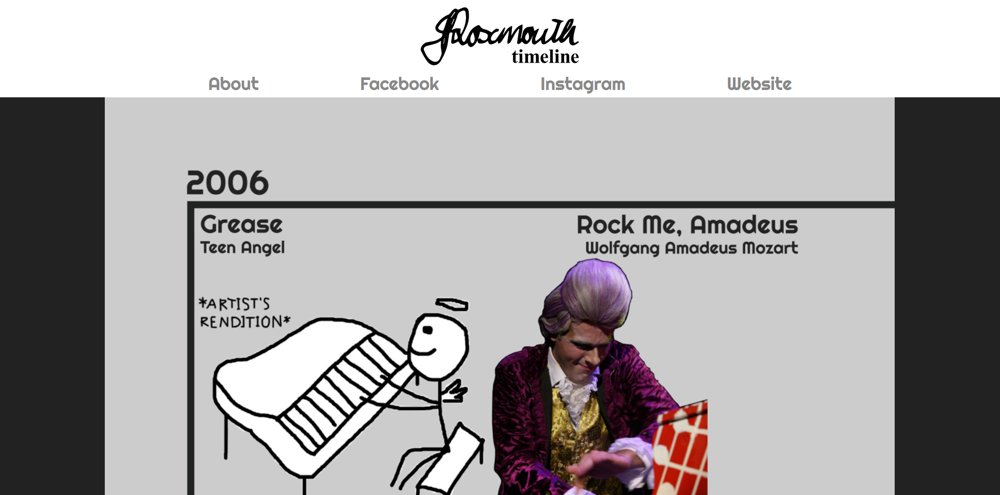

Project 3
UI Design Process, Person, Place, Thing
A project dedicated to creating a website for an underrepresented person, place, or thing. With artist permission, I created a timeline based on the career of Jonathan Roxmouth. Due to deadlines, the timeline does not feature any concerts or album releases, only musicals or plays he has been casted in since starting his professional career in 2006. It was an interesting experience that came with some difficulties. Some of the information was harder to find, his official website lacks the productions of his entire career and seems to only showcase some highlights. Years are also not included in this, so I had to find articles about the shows for some. I also experimented with new things to code, such as a modal, an SVG, and a scroll to the top button. Overall, I am very happy with the results and send much thanks for Mr. Roxmouth for the help and encouragement.